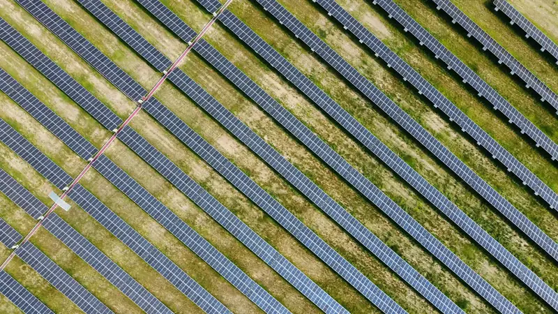
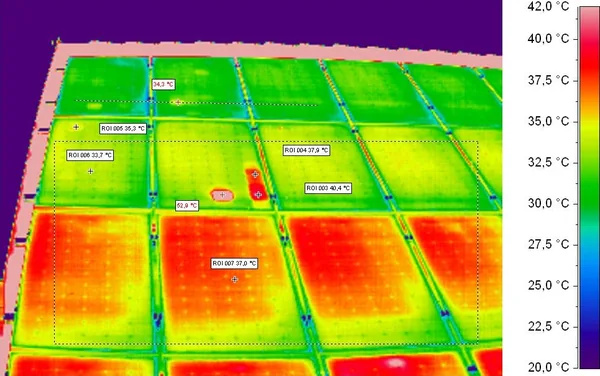
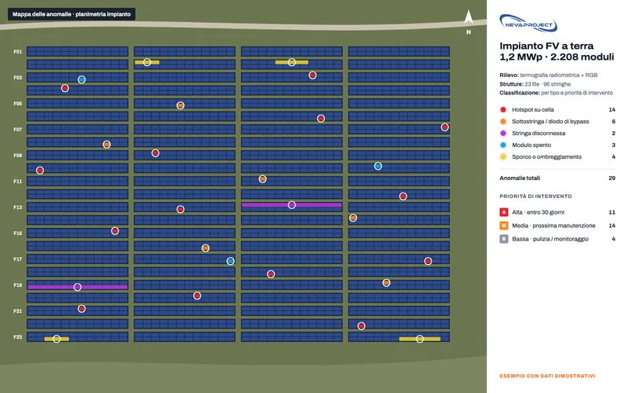
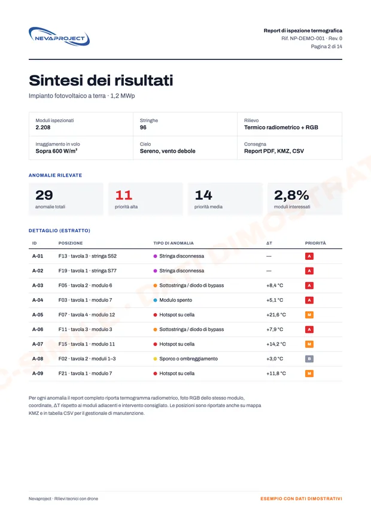

Termografia
Termografia aerea
Ispezioni termografiche radiometriche di coperture, impianti fotovoltaici e involucri edilizi. Individuiamo dispersioni, infiltrazioni e celle difettose.
- Termogrammi radiometrici
- Mappa delle anomalie
- Report tecnico
Cosa ricevi, in pratica

Termogramma radiometricoTemperatura misurata in ogni punto, con scala e anomalia evidenziata.

Mappa delle anomalieOgni difetto sulla planimetria, per tipo e priorità di intervento.

Report tecnicoSintesi, tabella delle anomalie e interventi consigliati.
Mappa e report: esempi con dati dimostrativi. Termogramma: Lutz Weidner, Wikimedia Commons, licenza CC BY-SA 3.0.